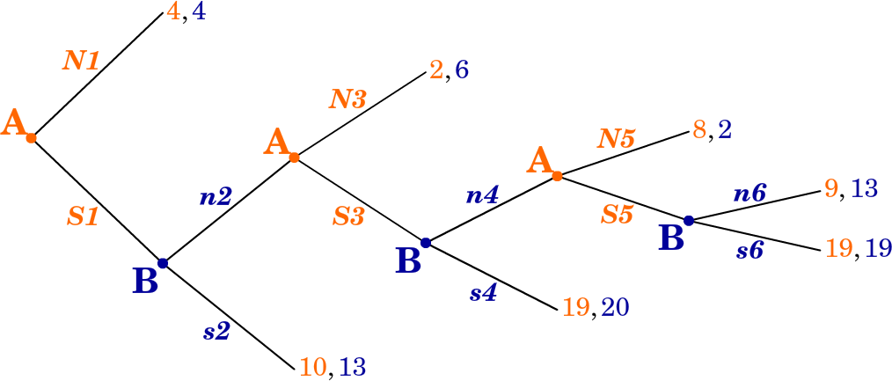

7 Extensive form games (and sequential games)
Any game can be modeled as either a Strategic (AKA ‘normal form’) game or as an Extensive Game (AKA ‘Extensive Form’). A key difference: in Strategic games we simply consider a set of actions or strategies, while in Extensive games we map a “history”, and we may consider the “sub-games” starting at any point in this history.
For situations that occur with sequential moves over time, where players alternate making choices, it may be simplest to depict these using a “game tree” such as the one below for the ‘entry game’ (formally an ‘arborescence’ with ‘nodes and branches’) and simpler to think of these as extensive form games.
Entry game
Note: Game trees can also depict simultaneous choices or a mix of simultaneous and sequential choices.:
The sequentiality of the choice only matters if the later mover is observing the previous decision. Thus, we can depict an “as if simultaneous” choice by “connecting the information set” in a game tree.
See, for example, the ‘Rock paper scissors’ (anticoordination) simultaneous game below:

rocks-paper-scissors
More graphically:

rocks-paper-scissors
The dashed line indicates ‘at the time that player to his choosing rocks paper or scissors, she does not know whether player one has chosen rocks paper or scissors’).
But we could also have ‘sequential rocks paper scissors’, perhaps a dumb game:

rocks-paper-scissors
rocks-paper-scissors
So, we can depict games in either format: the Strategic form (which we formally defined in the last section) or the Extensive form, as is convenient.*
* Note that it is easy to depict and to analyze most extensive form games with a game tree and concepts such as “backwards induction”. However the formal representation of extensive form games is somewhat cumbersome, but we nonetheless introduce it below, along with formal concepts such as subgame perfection.
‘Complete contingent strategies’:
“Imagine a player wishes to leave explicit instructions to some agent” concerning how to play on his/her behalf.
– Note: This is not the same as a commitment.
However there is an important difference in the analysis of extensive form and strategic games. Some strategies may prescribe actions that may be optimal responses to another player’s strategy if we ‘start from the beginning’ (or from an earlier stage of the game); however, if we were to actually reach the part of the game that prescribes such an action, the action would no longer be optimal. we may want to rule out such strategies involving “incredible threats” or “time inconsistent behavior”. The Strategic form does not consider the sequence of the game, so it cannot address this; here we need the Extensive Form.
There may be other important differences in the analysis of the Extensive vs. Strategic representations of the games. The Extensive form also makes it easier to consider imperfect and incomplete information; where earlier actions are not observed by later players, and where there are random components to payoffs.
The Extensive form (and tree depiction) did make it convenient for me to consider the ‘information sets at the end of the game’ and to depict payoffs adjusted for ‘Losing Face’ in a fancy game where payoffs depend on information sets themselves. (Gall and Reinstein 2020)
O-R depict extensive games and subgame perfection (subgame perfect equilibrium) rather formally, with somewhat cumbersome notation. We will cover most of this below.
But first, I present a simple depiction.
7.1 Extensive form and subgame perfection: simple depiction
How does the Battle of Sexes game change if Wife chooses first, Husband observes her choice, and then he chooses
What do you think will happen?
- A. Wife: Ballet, Husband: Box
- B. Wife: Ballet, Husband: Ballet
- C. Wife: Box, Husband: Ballet
- D. Wife: Box, Husband: Box

Remember, it’s a one-shot game … unrealistic within a marriage of course
- The wife has two strategies: Ballet or Boxing
- The husband has four contingent strategies, but we focus on what he will do in each of his two possible ‘decision nodes’
Here we see there is a ‘first-mover advantage’. (Unfold)
It is better to be the first-mover than the second mover in such a game. If we switched the order, the wife would likely become better off and the husband worse off.
We see a very similar strategic concern in other contexts, including ‘which firm enters a market first’. Suppose that if two firms are in a market there will be a price war with consumers as well as a bidding up of input prices and salaries, and both will lose money. Perhaps by being the first firm to enter I ‘scare off the other firm’ and I can keep the profits. The other firm may ‘threaten to enter’ but that would seem to be a non-credible threat! On the other hand, suppose that I know that if I enter first the other firm can ‘learn from my mistakes’ and free-ride off my innovation. Here we would have a ‘second-mover advantage’; but in such a game a BWI may lead to the outcome ‘neither firm enters’!
These concerns also apply to politics, and the games can of course include multiple players …
Can you think of some examples?
Some example from 2018… can you think of comparable examples from today?
Cameron’s decision to allow a referendum, followed by politician’s (Boris etc) decisions to choose a side?
May’s negotiations with the EU (Barnier), followed by the parliament’s ‘meaningful vote’, followed by ??
US Supreme court fight over Brett Kavanaugh, the sequential decisions of the last ‘swing’ senators
- Proper subgame (informal definition)
Part of the game tree including an initial decision not connected to another (in an oval or dashed lines) and everything branching out below it.
- I.e., each ‘game’ starting from a point where a player knows where he is (knows previous choices).*
As noted earlier, if we want to consider imperfect information we may want to consider ‘informations sets’, and we can connect several nodes to indicate ’the player doesn’t know at which node she is, because she doesn’t know what the previous player(s) did
We can derive the outcomes consistent with SPNE via backwards induction.
Essentially, SPNE simply requires that each players (choose strategies that specify) would act optimally at each of the point they might find themselves… i.e., at each of the decision nodes in the extensive form ‘game tree.’
Is ‘backwards induction’ enough?`
To some extent this is the all of finite extensive games
BUT:
Yields no prediction with indifference,
No prediction with an infinite/indefinite horizon
Unclear what it predicts with imperfect information.
BWI is similar to an iterated dominance prediction, where a player only plays actions that are dominant in each subgame, but in what sense is does it yield an equilibrium?
So maybe we need further concepts such as ‘subgame perfection’
- Subgame-Perfect Nash Equilibrium (SPNE)
- Strategies that form a Nash equilibrium on every proper subgame.
You can solve for the *outcomes consistent with this with ‘backwards induction’ (BWI)
Solve for best move for last decision node (proper subgame)
Given these, solve for best response for previous decision node
Etc.
Example: BWI for Sequential Battle of the Sexes


Note that the SPNE in a sequential game always involves ‘best responses’. I think this makes SPNE more credible as a prediction in sequential games than “NE in simultaneous games”, as we don’t require coordination.
Next we can formally the specify (SP)NE strategies for the above game:
NE, not SP: {Wife: Boxing; Husband: Boxing, Boxing}
SPNE: {Wife: Ballet; Husband: Ballet, Boxing}
(reading Husband’s decision nodes left to right; please specify this)
It can get fancier

Note: you can ‘build these games’ at this on if you like
In ‘normal’ (matrix form), stating complete contingent strategies:

And the ‘abbreviated strategies’; leaving out decision nodes ruled out by a player’s own previous choices as specified in the strategy:


The SPNE; ‘state the complete contingent strategies’
A: S1, N3, N5
B: s2, n4, n6
Where actions are stated in the order of the decision nodes for each player.
7.2 ‘Repeated games’ … a form of sequential games (simple depiction)
One form of sequential game is called a “repeated game”
Repeated game: A simultaneous ‘stage’ game that is played some finite or infinite (or indefinite) number of times. The payoffs are the sum of the payoffs in each “stage game” (with possible discounting to reflect time preferences).
Definite time horizon
- Is there a way in which we can sustain cooperation in a finitely repeated Prisoners’ Dilemma?
- No.
Suppose we repeat the Prisoners’ Dilemma a finite (T) number of times, e.g., 10 times.
What is the outcome consistent with subgame perfect equilibrium?
Via Backwards Induction (BWI) : - In period 10 (period T) both players confess as it’s the dominant strategy - In period 9 (period T-1) - Knowing period 10 (period T) decision is unaffected by earlier moves, players confess in period 9 (their dominant strategy) - … etc, all the way back to period 1
Thus each player will Confess in every period. Not possible to sustain cooperation.
7.2.1 Trigger strategies
- Trigger strategy
- Strategy in a repeated game where one player stops cooperating in order to punish another player for not cooperating.
- Grim trigger strategy
- If the other player fails to cooperate in one period, play the (undominated) action that makes her worse off in all later periods
7.2.2 Repeated Games: Indefinite or infinite time horizon
- Game is played repeated for a potentially infinite number of periods
- But there is a ‘discount factor’ \(g\)
- \(g\) may represent the ‘probability the game is repeated another time’
Note: With an infinitely-repeated game with no discounting, payoffs would be potentially infinite, making it hard to decipher. It’s realistic to imagine people discount the future, and we don’t know how long these repeated interactions last; people die, move away, etc.
At this point it is worth a quick revision of what ‘discount factors’ mean. This is a basic concept in Economics and Finance. I discuss this in a prior section on ‘time preferences’, but it is more fully discussed elsewhere. In particular, see McDL: 13.3 on ‘dynamic choice’.
Note that there are some debates over whether it makes sense to ‘discount utility’… we can see this discounting as simply an easy notation in these repeated games.
Indefinitely repeated Prisoners’ Dilemma
Consider the following trigger strategy (for both players):
- Stay silent as long as the other player stays silent.
- If one player confesses, both players will confess from them on.
- Is this a SPNE?
- In each subgame after someone confesses, we play confess in all stage games (forever on), which we know is a NE
- What about periods where no one has confessed (yet)?
How do we know both players playing ‘confess forever’ is a SPNE?
Starting in any subgame, knowing the other player will confess, I will want to confess (for that period’s payoffs).
I also know that given his strategy, playing ‘silent’ in this period will not have any impact on my later payoffs.
The payoff from staying Silent (cooperating) each period is:
\[-2 \times (1 + g + g^2 + g^3 + ... )\]
The payoff from Confessing right away (after which both players Confess always) is:
\[ -1 + -3 \times (g + g^2 + g^3 + ... ) \]
Formula for a geometric series (where \(0<g<1\)): \(g + g^2 + g^3 + g^4 ... = g/(1-g)\)
The standard derivation of this is pretty neat; if you are not familiar, the Khan Academy (as usual) presents a pretty good explanation of this HERE
This formula is an important one in Economics (and beyond), particularly for discounting a constant stream of payoffs, e.g., stock dividends
Thus cooperation in a single period is ‘weakly preferred’ (at least as good) if
\[(-2) \times (1 + g + g^2 + g^3 +... ) \geq (-1) + -3 \times (g + g^2 + g^3 + ...)\]
\[g + g^2 + g^3 + ... \geq 1\]*
* Intuition for the second formula: left side is loss of future payoffs (-3 vs -2 forever from next period).
The right side is gain in that period (get -1 rather than -2))
\[g/(1-g) \geq 1\]
\[g \geq \frac{1}{2}\]
So, cooperation can be sustained as long as the probability of play continuing is high enough; here, above 1/2.
Just because it can be sustained doesn’t mean it will be; there are other Subgame-Perfect Nash equilibria, including ‘always confess’.
This setup is directly applied to the case of ‘a cartel’ of firms tacitly or overtly colluding to sustain high prices!
7.3 Extensive games (formal, following O-R)
Introducing ‘histories’ (O-R), considering the figure above:
We refer to each sequence of actions as a history. In [the entry game] there are five histories. The initial node [red square] represents the null history: no action has yet been chosen.
The node shown by a small [blue] disk represents the history (In).
Each of the three other histories, (In, Accomodate), (In,Fight), and (Out), leads to an endpoint of the game. We refer to these histories as terminal, and to the other histories, after which a player has to choose an action, as nonterminal.
O-R’s formal definition:
Warning, much of this may seem obvious and excessively mathematically formal. This comes from wanting to define every concept from the simplest possible set of axioms.
A (finite horizon) extensive game \(\langle N, H, P, (\succsim^i)_{i \in N} \rangle\) has the following components.
Note that the ‘action sets’ for each player are replaced by histories (H) and player functions (P). The histories will contain and specify actions.
Players: A set of players N = {1,…,n}. [as in strategic games]
Histories
A set H of histories, each of which is a finite sequence of actions. The empty history, \(\emptyset\), is in \(H\),
\(\emptyset\) is the ‘null history’ … ‘nothing has happened yet’
… and if \((a_1,a_2,...,a_t) \in H\) then also \((a_1,a_2,...,a_{t−1}) \in H\)
In other words, the set of histories \(H\) is the sets of all possible ‘specifications of points’ we could get to in the process of playing the game … so if we can get to a later point in a sequence we can get to an earlier point.
(We use the notation (\(h, a_1,...,a_t\)) for the history that starts with the history \(h\) and continues with the actions \(a_1,...,a_t)\).
A history \(h \in H\) is terminal if there is no \(x\) such that \((h, x) \in H\).
I.e., if there is no sequence with all of the elements in \(h\) and also additional elements. “Nothing more can happen… thus we are at the end point.”
The set of terminal histories is denoted \(Z\).
Player function
A function \(P : H \backslash Z \rightarrow N\) , the player function, which assigns a player to each nonterminal history (the player who moves after the history).
In other words ‘whose turn is it?’ or ‘who has the move?’.
(“\(H \backslash Z\)” is set theory notation for all elements of set \(H\) that are not in set \(Z\).)
Preferences
For each player \(i \in N\), a preference relation \(\succsim^i\) over \(Z\).
This is nearly as in the strategic, but now preferences are over ‘terminal histories’. A combination of strategies for each player will lead to a unique terminal history.
O-R:
… capturing a situation in which every player, when choosing an action, knows all actions previously chosen. For this reason, the model is usually called an extensive game with perfect information.
If some earlier actions were not observed by other players later in the game, we would need to specify what the player knows using the terminology of “information sets”. If time permits, we will return to this in section @ref{incomp-info}.
For the entry game we have:
Players: \(N=\{1,2\}\) (or \(N= \{\text{Challenger}, \text{Incumbent}\}\))
Set of histories: \(H =\{\emptyset,(Out),(In),(In,Cooperate),(In,Fight)\}\)
Note that, e.g., ‘(Out, Cooperate)’ is not a history in the set, as, if the first player does not enter, the second player does not ever ‘have the turn to act’.
Terminal histories: \(Z =\{(Out),(In,Cooperate),(In, Fight)\}\)
Player functions … who ‘has the move’: \(P(\emptyset)= 1\) and \(P(\text{In})=2\).
I.e., player 1 (challenger) moves first, i.e., after no previous actions. After history ‘In’ then player 2 (incumbent) ‘has the move’.
Preferences over histories (over the outcomes of histories):
\((In, Cooperate) \succ^1 (Out) \succ^1 (In, Fight)\) (for player 1, the challenger)
\((Out) \succ^2 (In, Cooperate) \succ^2 (In, Fight)\) (for player 2, the incumbent)
Strategies
a player’s strategy specifies the action she chooses for every history after which she moves, even histories that do not occur if she follows her strategy.
Formally (O-R):
A strategy of player \(i\) …. is a function that assigns to every [nonterminal] history \(h \in H \backslash Z\) for which \(P(h) = i\)
(…wherever ‘player \(i\) has the move after the history \(h\)’)
an action in \(\{x: (h,x) \in H\}\), the set of actions available to her after \(h\).
(‘\((h,x)\)’ denotes the history with a sequence of actions \(h\) followed by one more action \(x\). Yes this is cumbersome.)
A ‘strategy profile’ is a collection of strategies, one for each player. “Each strategy profile generates a unique terminal history.”
Formally:
Let \(s\) be a strategy profile for the extensive game …
The terminal history generated by \(s\) is \((a_1,...,a_T)\)
where \(a_1 = s^{P(\emptyset)}(\emptyset)\)
‘\(a_1\)’, the ‘first action in the history’, is the action specified in the strategy (\(s\)) …
chosen by the ‘player who has the move after the null history’ (\({P(\emptyset)}\))
…that is specified to be played after the null history (hence the \(\emptyset\) argument in \(s^{P(\emptyset)}(\emptyset)\).
and \(a_{t+1} = s^{P(a_1,...,a_t)}(a_1, ... , a_t )\) for \(t = 1,... , T − 1\)
Which is the action specified in the strategy for the player who ‘has the move’ after every other history prior to the terminal history.
7.3.1 Formal: ‘Regular’ Nash Equilibrium for the Extensive game
Formal (O-R) definition:
Let \(\Gamma = \langle N, H, P, (\succsim^i)_{i \in N} \rangle\)
(… now defined as a single mathematical object).
Let \(z(\sigma)\) represent the ‘terminal history generated by some strategy profile \(\sigma\)’ (remember, a strategy profile specifies one complete contingent strategy for each player)…
Then:
A strategy profile \(s\) is a Nash equilibrium of game \(\Gamma\) if for every player \(i \in N\) we have
\[z(s) \succsim^i z(s^{−i}, r^i) \text{ for every strategy } r^i \text{ of player } i\]
I.e., given the other player’s strategies (\(s^{−i}\)) that form part of this profile, the strategy chosen by \(i\) is yields an outcome that is at least as good for \(i\) as any other outcome.
Note \(z(s^{−i}, r^i)\) means the profile combining the strategies chosen by each other player (\(s^{−i}\)) with the strategy we are considering for \(i\) (\(r^i\)).
For example, in the entry game, the profile of strategies \((Out, Fight)\) is (one of two) Nash Equilibria. This holds even though ‘Fight’ is not an optimal action for for the incumbent in the case we actually get to this point (i.e., after the competitor chooses ‘In’.). Against the strategy of ‘Out’, the strategy “Fight” yields as high a payoff as does her only other strategy (‘Cooperate’).
But perhaps this doesn’t seem like a reasonable prediction to make; perhaps not even an important ‘stable’ equilibrium….
“…subgame perfect equilibrium, by contrast, requires that each player’s strategy is optimal, given the other players’ strategies, after every possible history, whether or not the history occurs if the players follow their strategies.” (O-R, emphasis added).
7.3.2 Formal: Subgame perfect equilibrium
First we define ‘the terminal history extending \(h\)…’ (O-R). This is notationally complicated, but it is fairly simple when you look at some of the examples provided. Basically, this ‘terminal history extending h generated by \(s\)’ just specifies the outcome that is reached “if \(h\) occurs and then the players choose the actions specified by [their strategies] \(s\).”
A slightly simpler definition, used in some texts, refers to ‘continuation strategies’.
Formally:
The terminal history extending h generated by \(s\), denoted \(z(h,s)\), is \((h, a_1,..., a_T)\)
where \(a_1 =s^{P(h)}(h)\) and \(a_{t+1} = s^{P(h, a_1,...,a_t)}(h,a_1,...,a_t)\) for \(t = 1,...,T−1\).
And finally, the formal definition of the Subgame perfect [Nash] equilibrium (SPNE); essentially requiring that a strategy prescribes actions that are optimal after every history.
…
A strategy profile … is a subgame perfect equilibrium of \(\Gamma\) if for every player … and every nonterminal history \(h\) for which \(P(h) = i\) we have
\[z(h,s) \succsim^i z(h,(s^{−i}, r^i)) \text{ for every strategy } r^i \text{of player} i\]
… (with definitions as above)
As O-R note, “every subgame perfect equilibrium is a Nash equilibrium, but some Nash equilibria are not subgame perfect equilibria.”
Subgame perfection is referred to as a ‘refinement’ of the Nash equilibrium; an additional requirement that allows us to ‘rule out’ some strategy profiles as unreasonable by this criterion.
Ultimatum game (O-R example 16.1)
This is a widely-considered game, often taken to model bargaining between two people, as we see in the later discussion of the TIOLI bargaining game.
Some notes:
As described, there are several Nash equilibria but only two that are subgame perfect… i.e., where player 2 would actually wish to follow-through on her strategy at all points.
Here ‘indivisible’ makes the discussion easier. If we had the good to allocate being expressed as real numbers,the only SPNE would have player 1 offering 0, and player 2 accepting every offer. But this might seem weird because after being offered 0, player 2’s decision to choose ‘Yes’ is only a weak preference.
The situation of an ultimatum game is tested in economic experiments. However, here fairness preferences may be in play and thus we do not know what the players true preferences are. Thus we are in a sense jointly testing each player’s fairness (or other regarding or social) preferences as well as her strategic decision making.
Centipede game
Maybe it’s good to think of as ‘alternating buying rounds of drinks at a pub’ … or ‘exchanging birthday presents year after year’, or ‘babysitting for each other’… but where some additional value is gained each time by one guy in excess of the cost to the other guy. E.g., in the drinks case, you are saving the cost of waiting in a queue. As for gifts, this is a hotly debated point: do gifts add net value than their cost?*

Figure 7.1: 6-period Centipede game, from O-R
Players: 1, 2
They alternate making decision to ‘stop the game (\(S\)) or continue (\(C\))’
The game lasts at most \(2T\) periods… if no one stops it
After every period whenever a player choose to continue (C ), she loses $1 and the other player gains $2.
There are many Nash equilibria, but all have the outcome \(S0\): player 1 stops immediately. However, the ‘complete contingent strategies’ differ among these NE.
player 1 chooses \(S\) at the start of the game and player 2 chooses \(S\) after the history \((C)\), but after longer histories each player’s strategy may choose either \(C\) or \(S\).
… given that player 1 intends to stop the game immediately, player 2 is indifferent between all her strategies.
However, the game has a unique subgame perfect equilibrium, in which each player chooses S whenever she moves.
I need to think about this more, not sure I get the point they are making here.
This can be found through backwards induction. In the following subsection O-R make a big deal about how the fully contingent ‘strategies’, which are more elaborate than ‘plans of action’ are meaningful because
a pair of strategies in the centipede game, and in other extensive games in which players move more than once, is more than a pair of plans of action; it embodies also an analysis of the game that contains the beliefs of the players about what would happen after any history.
This game (see discussion of experimental evidence) also illustrates the idea that being able to solve for the SPNE doesn’t necessarily help me play better. Even leaving aside social/fairness preferences here, if you think that the other player will not use backwards induction, you might be better off choosing ‘continue’, at least in the earlier stages.
Another thing to think about: suppose we have a long Centipede game. Suppose I move second, and I’ve observed the first player choosing ‘Continue’. Is it then still reasonable to assume the other player uses backwards induction and maximizes her payoff, or should I adjust my assumptions and my calculations?
I think you may want to skip, for now, the formal definition of backward induction and the proof of its equivalence to SPE. This seems rather too abstract: I don’t see the relevance of this for game theory applications.
7.3.3 Bargaining
Here O-R present and discuss some of the key models in the field of Bargaining theory. This is well-worth a read, and very relevant to ‘applied theoretical questions’ (is that an oxymoron?).
It is striking to see how the outcome consistent with SPNE of wach of the setups varies dramatically depending on what seem like small changes in the setup.
Take it or leave it (ultimatum game)
Finite horizon with alternating offers
Infinite horizon with one-sided offers
Infinite horizon with one-sided offers and discounting
Key idea behind the proof of O-R Prop 16.7:
“M” is the supremum (think ‘maximum’ for now) of player 2’s payoffs can get in any SPNE.
- This means that if player 1 offers \(\beta \times M + \epsilon\) (where \(\beta\) is the discounting, e is a ’very small number) in any period, then player 2 will accept the offer…
- because the most she will get if she waits is to get (less than) M next period, which is worth (less than) \(\beta \times M\) to her now, because of discounting
So in any SPNE player 2 plays ‘accept’ after any history where she has been offered any amount greater than \(\beta \times M\) So player 2’s payoffs cannot be strictly greater than \(\beta \times M\) in any SPNE
But if she cannot get more than \(\beta \times M\) in any SPNE that means that this “\(\beta \times M\)” is the most she can get, so player 1 only needs to offer \(\beta \times beta \times M\)… But then she can not get more than \(\beta \times beta \times M\), so player 1 only needs to offer \(\beta \times beta \times beta \times M\)… etc
More formally, ., the ‘supremum’ of her payoffs must be \(\beta \times M\), but this ‘supremum’ is defined as M. So \(\beta \times M=M\) must hold. It can only hold if \(M=0\).
Intuition – in period \(t\) you only need to offer her \(\beta \times\) ‘the most she could get if she rejects’ in period t+1; but if she rejects, then the remaining game (in period \(t+1\)) is identical to the game now (in period t), so you need to offer her some amount so that ‘the discounted value of the amount is the same as the amount itself’… this is only the case if the amount is 0
Infinite horizon with alternating offers and discounting
I hope to add a more content here, especially discussing the O-R text
References
Gall, Thomas, and David Reinstein. 2020. “Losing Face.” Oxford Economic Papers 72 (1): 164–90.
List, John A, and Jason F Shogren. 1998. “The Deadweight Loss of Christmas: Comment.” The American Economic Review 88 (5): 1350–5.
Reinstein, David. 2014. “The Economics of the Gift.”
Waldfogel, Joel. 1993. “The Deadweight Loss of Christmas.” The American Economic Review 83 (5): 1328–36.